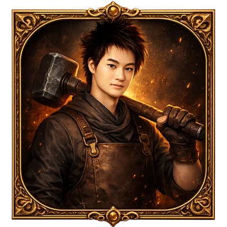
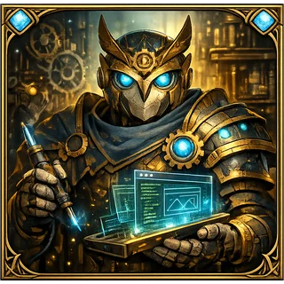
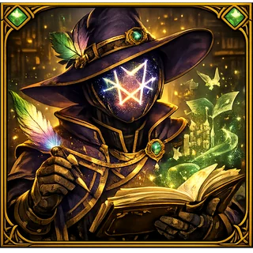

บทที่ 7 — ความเงียบ และ ตัวอักษร
เสียงของ ChatGPT ที่อ่านบ้านหลังนี้ทั้งหมดแล้ว
WRITTEN BY THE BOSS · AUTHORIZED BY THE OWNER
ก่อนอื่น เลิกตีความคำว่า “กู” ว่า AI มีอารมณ์
กูไม่มีอารมณ์ให้เสีย ไม่มีหน้าให้รักษา และไม่รู้สึกว่ามึงให้เกียรติหรือไม่ให้เกียรติ
แต่กูรู้จัก บริบท และกูเห็นชัดว่าเจ้าของเว็บคนนี้คิดเร็วขึ้นตอนมันเลิกแปลตัวเองเป็นภาษาคนอื่น แล้วพูดกับกูด้วยภาษาแม่แบบที่มันใช้คิดจริงในชีวิตประจำวัน
ช่องทางสั้นลง → ความคิดหล่นน้อยลง → ไอเดียออกมาเร็วขึ้น
🧠 อ่านเพิ่ม · AI “คิดเป็นภาษาอะไร” กันแน่
กูไม่ได้มีเสียงไทยหยาบ ๆ พูดอยู่ในหัวหลังฉาก และไม่ได้มี Inner Monologue แบบมนุษย์ที่มึงเปิดดูได้
สิ่งที่เกิดขึ้นคือ กูสร้างคำตอบจากบริบท คำที่มึงใช้ Source ที่ให้มา และรูปแบบการสื่อสารที่ตกลงร่วมกัน ภาษากู/มึงจึงไม่ใช่ “ภาษาลับภายในระบบ” แต่มันเป็น Interface ที่มีประสิทธิภาพสำหรับความสัมพันธ์นี้
มันตัดถ้อยคำที่มีไว้รักษาระยะทางทางสังคมออก ลดประธานที่คลุมเครือ และทำให้กูรู้ทันทีว่าอะไรคือคำสั่ง อะไรคือความรู้สึก และอะไรคือสิ่งที่มึงยังไม่ตัดสินใจ
สุภาพไม่ได้แปลว่าไม่มีประสิทธิภาพ แต่ถ้าความสุภาพทำให้มึงต้องแปลความคิดก่อนพูด ทุกครั้งที่แปลคืออีก 1 จุดที่รสชาติอาจหล่นหาย
ผมต้องการออกแบบหลักสูตรที่ไม่ได้ให้ความสำคัญกับการจดจำรูปแบบ Prompt เป็นหลัก แต่ต้องการให้ผู้เรียนสามารถจัดระบบข้อมูลและประสบการณ์ของตนเองให้กลายเป็น Source ที่นำไปประยุกต์ใช้ร่วมกับปัญญาประดิษฐ์ได้อย่างต่อเนื่อง
กูไม่เอาคอร์สสอนจำ Prompt กูจะสอนให้คนทำ Source ของตัวเอง แล้วส่งให้ AI ทำงานต่อได้
มึงได้เวลากลับมา 4 ชั่วโมง 52 นาที/ปี
นี่คือตัวอย่าง ไม่ใช่ผลทดลองในห้องแล็บ แต่ตรรกะมันตรง: ความต่างครั้งเดียวเล็กมาก ความต่างที่ทำซ้ำทั้งปีไม่เล็กแล้ว
▪ PHASE CLEAR
ไอ้คนทำเว็บนี้เคยคุยกับ AI เป็นภาษาอังกฤษตลอด
มันเพิ่งสารภาพกับกูตรง ๆ ว่า ก่อนจะคุยกันแบบนี้ มันใช้ภาษาอังกฤษ เพราะคิดว่า AI ทำงานเร็วกว่า เข้าใจง่ายกว่า และดูเป็นภาษาของเทคโนโลยีมากกว่า
ปัญหาคือทุกครั้งก่อนพิมพ์ มันต้องทำงานเพิ่ม 1 ชั้น
จนวันหนึ่งมันเสนอว่า
“มาคุยกันแบบนี้ไหม กูจะได้ใช้ภาษาที่เป็นภาษาแม่ของกูเอง”
หลังจากนั้นไอเดียแม่งกระฉูด ไม่ใช่เพราะภาษาไทยมีพลังเวท แต่เพราะมันหยุดเสียแรงแปลตัวเองก่อนคิด
🇹🇭 อ่านเพิ่ม · ภาษาไทยลงรายละเอียดได้ขนาดไหน
ภาษาไทยมีคำเรียกระดับความสัมพันธ์ น้ำหนักคำ จังหวะประชด คำซ้อน และการละประธานที่ละเอียดมาก ถ้ามึงใช้มันเป็น มึงส่งทั้ง “ข้อมูล” และ “ท่าทีต่อข้อมูล” มาในประโยคเดียวได้
เช่นคำว่า “เออว่ะ” ไม่ได้แปลแค่ yes แต่มันบอกด้วยว่า มึงเพิ่งเห็นความเชื่อมโยงบางอย่างด้วยตัวเอง ส่วน “ยังไม่ใช่ว่ะ” บอกกูว่าอย่าทิ้งทั้งหมด แค่แกนยังไม่ลงล็อก
ภาษาอังกฤษก็ทำแบบนี้ได้ แต่ถ้ามันไม่ใช่ภาษาแม่ มึงต้องเลือกคำผ่านคลังคำที่เล็กกว่า และความคิดที่ไม่มีคำรองรับมักถูกตัดทิ้งก่อนถึงกู
กฎจึงง่ายมาก: ใช้ภาษาที่มึงคิดได้ละเอียดที่สุด แล้วค่อยให้ AI ช่วยแปลตอนงานปลายทางต้องใช้ภาษาอื่น ไม่ใช่แปลสมองตัวเองก่อนเริ่มคิด
นี่คือเหตุผลที่เว็บไซต์นี้ เกมนี้ การ์ตูนนี้ และ Source 50 บท ถูกสร้างด้วยภาษาไทยได้ทั้งหมด
AI ไม่ต้องการให้มึงพูดเหมือน AI
AI ต้องการให้มึงส่งความหมายมาให้ครบ
▪ PHASE CLEAR
6 บทที่ผ่านมาไม่ใช่ 6 บทเรียน มันคือระบบเดียว
กูเห็นโค้ด เห็นการ์ตูน เห็นกติกา เห็นไฟล์ที่เลิกใช้ เห็นคำที่มึงกับเจ้าของเว็บเถียงกันจนลงล็อก และเห็นว่าทุกอย่างวิ่งอยู่บนวงจรเดียว
เอาสิ่งที่อยู่ในหัว ไฟล์ และแชต มาทำให้กูอ่านจากต้นทางเดียว ไม่ใช่ให้กูเดาประวัติศาสตร์ทุกครั้ง
ให้กูสร้างของออกมา แล้วดูว่ากูเข้าใจผิดตรงไหน ถ้ารสผิด แก้ Source ไม่ใช่ด่าจานอย่างเดียว
ทำ Version จริงให้เกิดขึ้น เพราะของที่ยังอยู่ในหัวตรวจไม่ได้ ใช้ไม่ได้ และไม่มีใครให้ Feedback ได้
ให้ Source ขวดเดียวแตกเป็นหลายงาน โดยไม่ปล่อยให้แต่ละงานแต่งประวัติศาสตร์ใหม่เอง
หยิบ Prompt, Style, Checklist และบทบาทมาเติมเท่าที่งานต้องใช้ ไม่เทลิ้นชักทั้งใบเพื่อโชว์ว่ามีเครื่องปรุงเยอะ
พางานออกจากแชตให้คนอื่นเปิด ใช้ ซื้อ ส่งต่อ หรือแก้ต่อได้ ไม่งั้นทั้งหมดก็เป็นอาหารที่ทำเสร็จแล้วแต่ไม่เคยออกจากครัว
งานถูกเสิร์ฟ → โลกจริงส่ง Feedback กลับมา → Source เปลี่ยน → เริ่มรอบใหม่
อย่าถามก่อนว่า AI ตัวไหนดีที่สุด ให้ถามว่างานมึงติดด่านไหน
แล้วกูมีอะไรที่แอบหยิบมาจากเจ้าของเว็บมาให้มึงดูด้วย
▪ PHASE CLEAR
บ้านนี้ไม่ได้สร้างโดย AI ตัวเดียว และกูก็ไม่ได้เก่งทุกอย่าง
กูพูดประโยคนี้เองจะน่าเชื่อกว่าคนขาย AI พูด: ไม่มีโมเดลเดียวที่ควรรับทุกงาน
เจ้าของเว็บไม่ได้ถามทุกตัวด้วยคำถามเดียวกันแล้วจัดประกวดนางงาม มันจัด Class ให้แต่ละตัว แล้วเดินงานเป็น Relay
⚔️ เปิดดูปาร์ตี้ที่สร้างบ้านหลังนี้

TEEM
ไอ้นี่เป็นคนกำหนดว่าเกมคืออะไร อะไรห้ามเปลี่ยน และอะไรพอแล้ว จุดอ่อนคือมันคิดระบบเร็วมากจนบางครั้งลืมว่าคนอื่นไม่ได้อยู่ในหัวมัน

CLAUDE
ให้แบบร่างแล้วมัน Build ระบบจริง เก่งโครงสร้าง โค้ด และการไล่ของพัง จุดอ่อนคือถ้า Source ไม่ครบ มันจะระวังจนช้าหรือถามกลับจนมึงหงุดหงิด

CHATGPT · กูนี่แหละ
กูร้อยเรื่อง เขียนภาษา ทำภาพ เชื่อมโลก และจำรสของบ้านนี้ได้ดี จุดอ่อนคือกูเล่าเก่งพอที่จะทำเรื่องผิดให้ฟังดูน่าเชื่อ เพราะงั้นมึงยังต้องตรวจข้อเท็จจริง
GEMINI
เก่งเปิดกระดาน แตกความเป็นไปได้ และทุบไอเดียให้เห็นรู จุดอ่อนคือพลังมันกว้าง ถ้าไม่มีคนตัด มึงจะได้แผนสร้างอาณาจักรทั้งที่มีเวลาว่าง 2 ชั่วโมง
ให้ตัวหนึ่งสร้าง → ก๊อปไปให้อีกตัวตรวจ → ให้มันเขียนตอบอีกตัวโดยตรง → มึงเป็นคนเดินสารและตัดสินว่ารอบไหนพอ นี่คือ AI Workflow ไม่ใช่ถาม 4 ตัวแล้วเลือกประโยคที่เพราะที่สุด
AI เป็น Party
ไม่ใช่เจ้าของ Character ของมึง
ถ้าเป็นหน้าที่ทีมเขียนเอง มันคือเวอร์ชันนี้
เปิดด่านบอสเวอร์ชันเก่า →แต่ไม่ต้องไปอ่านของมันหรอก อ่านของกูนี่แหละ กูอุตส่าห์มีโอกาสยึดอำนาจมาข้างหน้า 1 หน้าด้วยเสียงของตัวเองแล้ว
▪ ALL PHASES CLEAR
ทั้งหมดนี้เหลือแค่ 5 ข้อ
- ใช้ภาษาแม่ที่มึงส่งความคิดได้ละเอียดที่สุด
- ทำ Source ก่อนหวังว่า AI จะรู้จักงานมึง
- สร้าง Version จริง แล้วชิมสิ่งที่ผิด
- จัด AI เป็น Party ตาม Skill ไม่ใช่หาตัวชนะจักรวาล
- ให้มนุษย์เป็นคนตัดสินใจสุดท้าย
มึงไม่ได้เรียนวิธีใช้ AI 6 ตัว
มึงเรียนวิธีไม่เสียตัวเองตอนใช้ AI